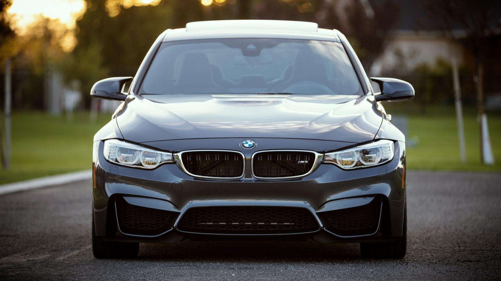
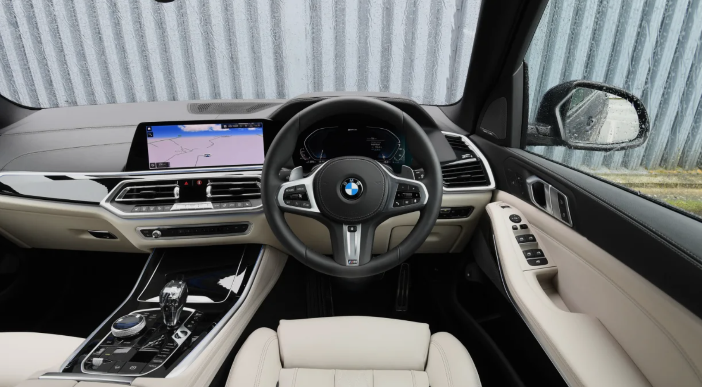

Welcome to BMW Explorer
Brand History
BMW (Bayerische Motoren Werke) was founded in 1916 in Munich, Germany, originally as an aircraft engine manufacturer. After the First World War, the company shifted to producing motorcycles and later automobiles. Over the decades, BMW became known worldwide for combining performance engineering with everyday driving comfort. Today it is one of the most recognizable premium car brands on the planet.
What Makes BMW Different
BMW is famous for its "Ultimate Driving Machine" philosophy, which focuses on precise handling, a near-perfect 50:50 weight distribution, and driver-focused interiors. The brand is also well known for its inline-six engines and its M performance division, which turns regular BMW models into track-capable sports cars.
Iconic BMW Model Lines
- 3 Series - the classic sports sedan
- 5 Series - the executive sedan
- X5 - the brand's flagship SUV
- M3 - the high-performance icon
- i4 - BMW's all-electric sedan
What BMW Is Known For
- Precision engineering
- Driver-focused design
- Performance-tuned M models
- Distinctive kidney-grille styling
Gallery

